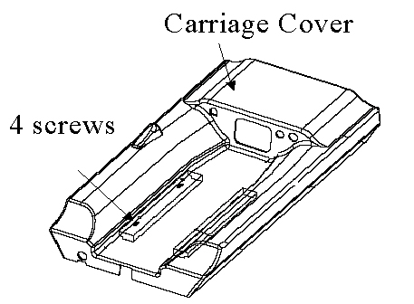
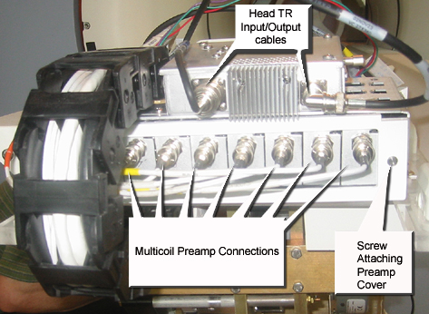

Operating Documentation
Direction 5133330-3, Rev# 14
Signa EXCITE HD 3.0T Service Methods
Module Version 1.0, Version Date 5/3/07
Operating Documentation |
| Required Persons | Preliminary Reqs | Procedure | Finalization |
|---|---|---|---|
| 1 | Not Applicable | 30 mins | Not Applicable |
| Item | Qty | Effectivity | Part# | Manufacturer | |
|---|---|---|---|---|---|
| Standard Non Magnetic Screw Driver | 1 | - | - | - | |
| ||||
| Missile Hazard! | ||||
| Strong magnetic filed. Ferrous material or tools will try to move to the center of the magnet at extreme velocity. | ||||
| Do not bring ferrous material or tools into the magnet room. |
Open up the LPCA by removing the 4 screws securing cover to the carriage. (see Illustration 1).
Illustration 1: Open LPCA

Remove the BNC cables connections from the preamps. (see Illustration 2).
Illustration 2: Multicoil Preamp

Remove the screw that attaches the back plate on top the preamp.
The preamp can now be removed by hand. Replace the defective preamp(s) and reverse the steps take to remove the old amp.
Reassemble anything taken apart.
Setup for a scan using multicoil to test that the system is working normally.